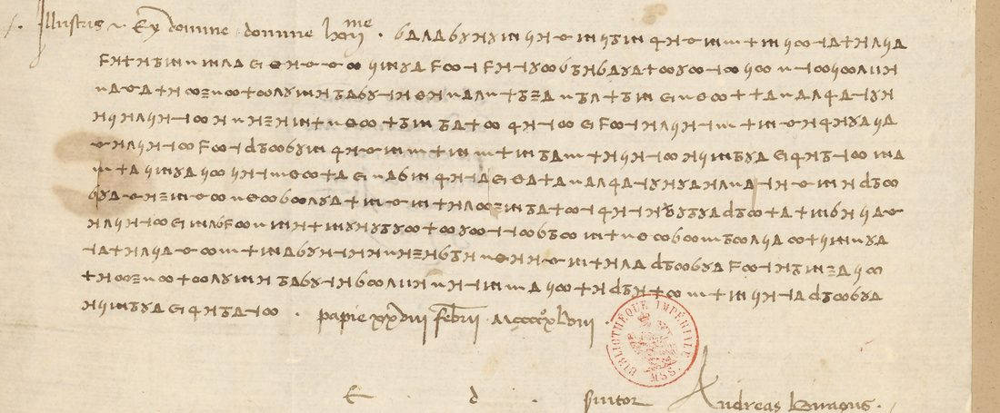
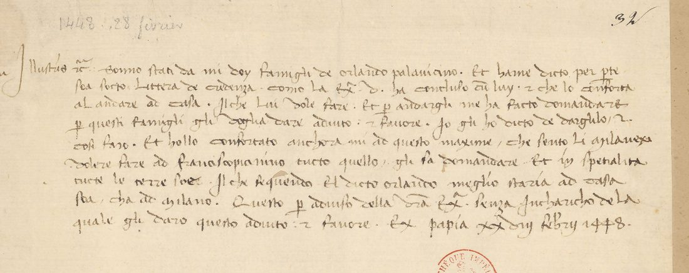

At a glanceExisting decipherment · complete
- The letter
- Andrea da Birago, a ducal official at Pavia, to Francesco Sforza, 28 February 1448, in the months of the Ambrosian Republic. Wholly in cipher after a clear salutation.
- Where
- Bibliothèque nationale de France, italien 1585 f. 33, on Gallica. Mazzatinti’s inventory lists it under Vincenzo Amidani. Lead 1546, now closed.
- The cipher
- A simple substitution: one sign per letter, a sign for et, and a code sign for Francesco Piccinino.
- How the text was obtained
- Birago’s key sheet is in Milan (DECODE R5316, never connected to a letter). With it the cipher reads as the same letter as the clear f. 32 mounted above it. All 513 signs are on the key, and the decode agrees with f. 32 throughout.
- What it says
- Orlando Pallavicino, reconciled with Sforza, asks Birago’s help to get home. Birago encourages him, because the Milanese mean to give Francesco Piccinino “tucto quello gli sa domandare”.
- Still open
- Nothing in the text. Two signs are cramped (the g of darghelo, an i of milano), and the sense fixes both.

01 The letter and its twin
A leaf-by-leaf check of the 1447–48 cipher letters in the Sforza papers in Paris found a decipherment beside almost every one: a later clear copy, a fifteenth-century clear text, or glosses between the lines (Barbavara and Pusterla is the first group written up). One leaf had none: italien 1585 f. 33. It is eleven lines from Pavia, wholly in cipher, signed by Andrea da Birago, in an alphabet unlike the others in the volume.
Mounted above it is f. 32, a clear letter in the same hand and of the same day. It looked like a separate letter. It is the same letter: once the key was found, the cipher decoded as f. 32 nearly word for word. Birago sent Sforza the letter twice, once in clear and once in cipher, presumably by two routes.

02 Birago’s key
DECODE’s metadata knows only the sixteenth-century Lodovico Birago. The Milan archive’s Sforza key sheets are on DECODE as the records of Carteggio Sforzesco cart. 1597, catalogued by number alone. Reading the headings of the first forty (R5301–R5340) found no. 16, R5316, dated “1450” on DECODE and otherwise undescribed. It is headed Andreas Biragus.
The sheet gives one sign for each letter of the alphabet (none for b), a sign for et, and one code sign, for “Francisco Piccinino”. The letter uses all 22 of them, and no other sign: s is 6, o Δ, n Λ, l +, e ∞, x ≡. The scribe kept the word gaps. It is the simplest cipher in the Sforza papers of these years. The key sheet itself is the Milan archive’s and is not reproduced; its signs are listed in key_R5316.tsv.
03 The reading
Decoded and split at the scribe’s gaps (decode.py), the cipher reads:
sono stati da mi dui famigli de rolando palauiciano et hamme dicto per parte sua soto letere de credenza como la excelentia uostra ha concluxo cun lui et chel lo conforta ad andare a caxa ilche lui uole fare et per andargli ma fato domandare per questi famigli gli uogla dare adiuto et faure io glo dicto de darghelo et cosi faro et holo confortato ancora mi a questo maxime che sento li milanexi uoler far a [Francesco Piccinino] tuto quelo li sa domandare et in specialita tutte le terre sue ilche seguendo el dicto rolando meglio stara a caxa sua cha a milano questo per auixo de la excelentia uostra senza carigo de la quale gli daro questo adiuto et fauore
Two servants of Orlando Pallavicino have come to Birago under a letter of credence. Sforza has come to terms with Orlando and urges him to go home, and Orlando means to; he asks Birago for help and an escort. Birago will give it, and has urged Orlando on. He hears that the Milanese, the Ambrosian Republic that took over Milan at the Visconti duke’s death, mean to give Francesco Piccinino whatever he asks, “and in particular all the lands”, so Orlando would do better at home than at Milan. Birago writes it for Sforza’s information, and will give the help at no charge to him.
The cipher differs from f. 32 only in spelling and small forms, 35 in all (texts/f33_vs_f32.md):
- Lombard spellings: caxa, concluxo, auixo, milanexi;
- “rolando” for orlando, both times;
- ilche for siche.
It also settles one word of the clear letter. After Senza, f. 32 has a long-shafted word hard to read; the cipher has carigo there, so it is incharicho, incarico. Francesco Piccinino is the only name in code; everything else, Orlando included, is spelled out.
04 What remains open
- Two cramped signs: line 6, the g of darghelo (closer in shape to c); line 9, an i of milano. The sense fixes both.
- The sign transcription was made by a subagent and checked here on lines 1–2 and line 7 (the Piccinino sign).
Full texts
The transcription and the decryption of every document on this page, so that the reading can be used and checked. Short files are shown here; all are in the repository.
Andrea da Birago to Francesco Sforza, Pavia, 28 Feb 1448 (f. 33, with its clear duplicate f. 32)
Orlando Pallavicino, reconciled with Sforza, asks Birago's help to get home; Birago will give it on Sforza's commission, all the more since the Milanese mean to give Francesco Piccinino whatever he asks, Orlando's lands included.
Transcription
# BnF italien 1585, f. 33 -- the same letter in Birago's cipher (key: ASMi Carteggio Sforzesco cart. 1597 no. 16, DECODE R5316). # One line per manuscript line. Each sign written as the key letter it stands for; ET = et sign, FP = Francesco Piccinino sign. # "|" = a word gap left by the scribe (gaps are often small; spacing judged from 2x crops). "?" after a token = shape uncertain. # The leaf has 11 cipher lines (the first on the salutation line), not 12. CLEAR: Illustris ac Excelse domine domine honorandissime [written: Illustris ~ Ex domine domine hon[orandissi]me] L01: s o n o s t a t i | d a m i | d u i | f a m i g l i | d e r o l a n d o L02: p a l a u i c i a n o | ET | h a m m e | d i c t o | p e r | p a r t e | s u a s o t o l e t e r e | d e | c r e d e n z a L03: c o m o | l a | e x c e l e n t i a | u o s t r a | h a | c o n c l u x o | c u n | l u i | ET | c h e l | l o | c o n f o r t a L04: a d | a n d a r e | a | c a x a | i l c h e | l u i | u o l e | f a r e | ET | p e r | a n d a r g l i | m a | f a t o | d o L05: m a n d a r e | p e r | q u e s t i | f a m i g l i | g l i | u o g l a | d a r e | a d i u t o | ET | f a u r e | i o L06: g l o | d i c t o | d e | d a r c? h e l o | ET | c o s i | f a r o | ET | h o l o | c o n f o r t a t o | a n c o r a | m i | a | q u e L07: s t o | m a x i m e | c h e | s e n t o l i | m i l a n e x i | u o l e r | f a r | a | FP | t u t o | q u e l o | l i s a | d o m L08: a n d a r e | ET | i n | s p e c i a l i t a | t u t t e | l e | t e r r e | s u e | i l c h | e s e g u e n d o | e l | d i c t o L09: r o l a n d o | m e g l i o | s t a r a | a | c a x a s u a | c h a | a | m i? l a n o | q u e s t o | p e r | a u i x o | d e L10: l a | e x c e l e n t i a | u o s t r a | s e n z a | c a r i g o | d e l a | q u a l e | g l i | d a r o | q u e s t o L11: a d i u t o | ET | f a u o r e CLEAR: papie xxviij febr. MCCCCXLviij. CLEAR: Servitor Andreas Biragus.
Decipherment of the time
# BnF italien 1585, f. 32 -- Andrea da Birago to Francesco Sforza, Pavia, 28 Feb 1448. Clear text. # Line by line as on the leaf. Abbreviations expanded in [brackets]; uncertain readings marked [?]. # Read from Gallica canvas c062.jpg (crops in targets/birago1448/img/work/f32_*.jpg, z32*.jpg). 01 Jllustris [et] ex[celse] d[omine][?]: Sonno stati da mi doy famigli de orlando palauiciano. Et hame dicto per p[ar]te 02 sua sotto Littera de credenza. como la ex[celentia] v[ostra] ha concluso cu[m] luy: [et] che lo conforta 03 al andare ad casa. Siche Lui vole fare. Et p[er] andargli me ha facto domandare 04 p[er] questi famigli gli voglia dare adiuto: [et] favore. Jo gli ho dicto de darghelo[?] / [et] 05 cosi faro. Et hollo confortato anchora mi ad questo maxime / che sento li milanexi[?] 06 volere fare ad francisco piccinino[?] tucto quello / gli sa domandare Et in spetialita 07 tucte le terre sue. Siche seguendo el dicto orlando meglio staria ad casa 08 sua, cha ad Milano. Questo p[er] aduiso della v[ost]ra Ex[celentia]. Senza incharicho[?] de la 09 quale gli daro questo adiuto: [et] favore. Ex papia xxviij febr[uarii] 1448. 10 S[ervitor] Andreas biragus. # Notes: "ad" is written with the looped a-d ligature (looks like "ao"/"ae"). "francisco piccinino" is run together # on the leaf (francisco|piccinino). The word after "Senza" (l. 08) is a long-shafted cursive word read as # "incharicho" [= incarico]; the cipher (f. 33 l. 10) has "carigo" in that place, which confirms the sense.
Decryption
CLEAR: Illustris ac Excelse domine domine honorandissime [written: Illustris ~ Ex domine domine hon[orandissi]me] L01: sonostati dami dui famigli derolando L02: palauiciano et hamme dicto per parte suasotoletere de credenza L03: como la excelentia uostra ha concluxo cun lui et chel lo conforta L04: ad andare a caxa ilche lui uole fare et per andargli ma fato do L05: mandare per questi famigli gli uogla dare adiuto et faure io L06: glo dicto de darc(?)helo et cosi faro et holo confortato ancora mi a que L07: sto maxime che sentoli milanexi uoler far a [Francesco Piccinino] tuto quelo lisa dom L08: andare et in specialita tutte le terre sue ilch eseguendo el dicto L09: rolando meglio stara a caxasua cha a mi(?)lano questo per auixo de L10: la excelentia uostra senza carigo dela quale gli daro questo L11: adiuto et fauore CLEAR: papie xxviij febr. MCCCCXLviij. CLEAR: Servitor Andreas Biragus.
Translation
# Andrea da Birago to Francesco Sforza, Pavia, 28 February 1448 (BnF italien 1585, f. 33, deciphered; clear copy f. 32) Most illustrious and excellent lord, my most honoured lord. Two servants of Orlando Pallavicino have been to see me. On his behalf, and under a letter of credence, they told me that Your Excellency has come to terms with him and is urging him to go home, which he means to do. To help him get there he has had these servants ask me to give him help and support. I told them I would, and I will. I have also urged him on myself, all the more because I hear that the Milanese want to give Francesco Piccinino whatever he asks of them, and in particular all of [Orlando's] lands. So if this goes ahead, the said Orlando would be better off at home in his own house than in Milan. I tell Your Excellency this for your information; I will give him this help and support at no charge to you. Pavia, 28 February 1448. Your servant, Andreas Biragus. *Notes.* "senza carigo de la quale gli darò": *senza carico* = without burden, i.e. at no cost to Sforza (a reading "without your commission" is possible but less natural). The f. 32 reading is *incharicho* (incarico). "Rolando/Orlando" is Orlando Pallavicino. "li milanexi" are the government of the Ambrosian Republic. Francesco Piccinino was then a condottiere in the Republic's service.
Key: key_R5316.tsv
05 Sources
- Bibliothèque nationale de France, italien 1585, ff. 32–33: Gallica btv1b52525947w, view 62 (both leaves), view 64 (the address of f. 33).
- The key: Archivio di Stato di Milano, Carteggio Sforzesco cart. 1597 no. 16, DECODE R5316.
- G. Mazzatinti, Inventario dei manoscritti italiani delle biblioteche di Francia II (1887), italien 1585 (Internet Archive).
- The leaf-by-leaf check of the series:
research/venice_milan_print/ital1584_copies.md.
Transcriptions, the decoder, the comparison with f. 32, the key table and the profile are in targets/birago1448/.